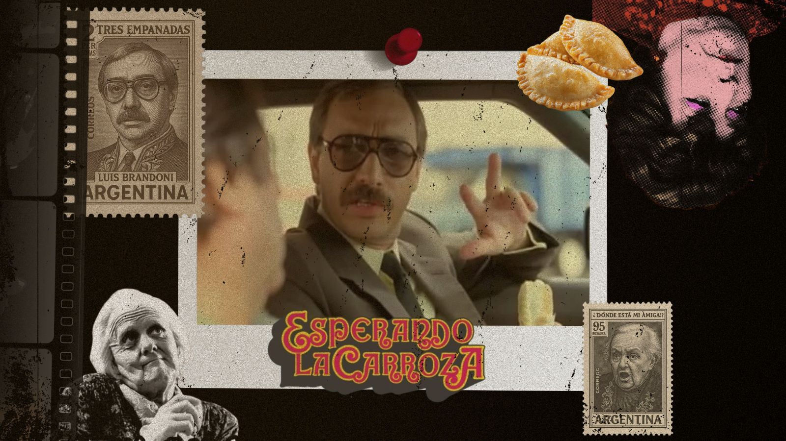
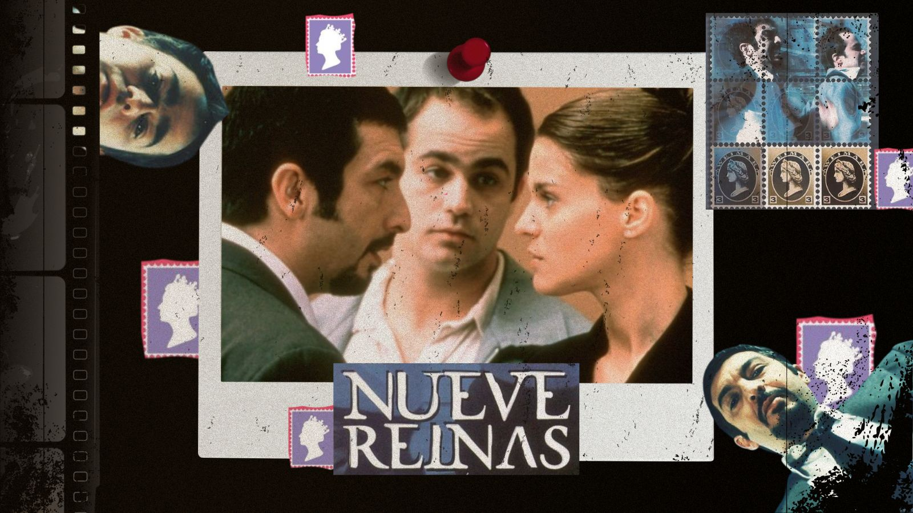
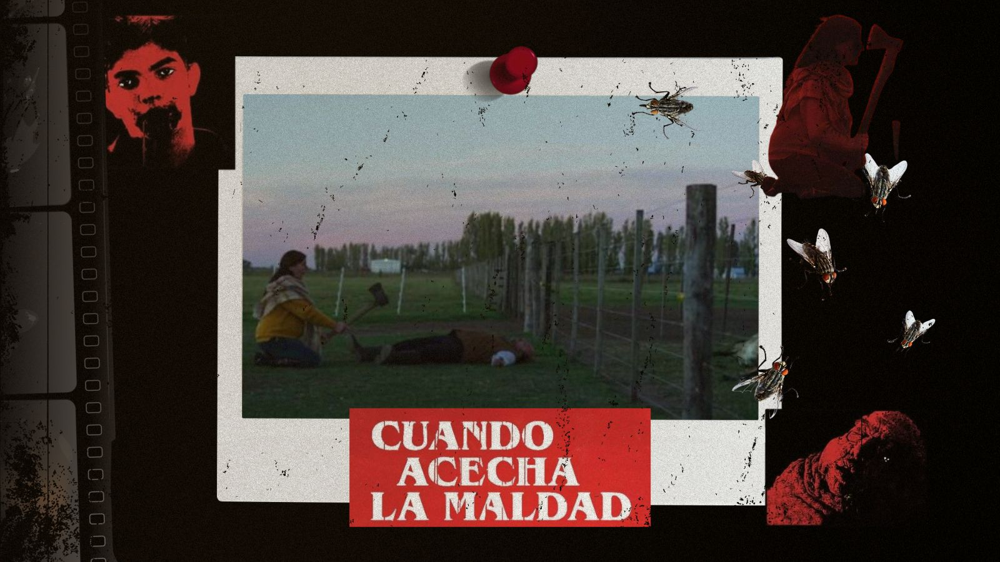
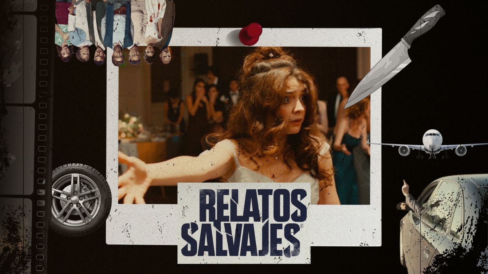
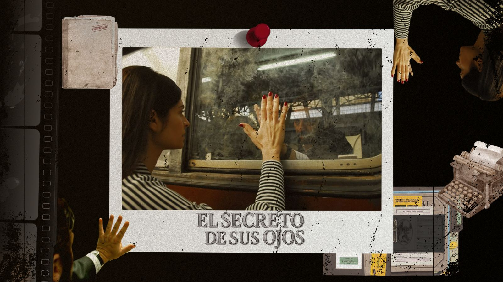

Nuestro cine es un signo distintivo de nuestra cultura y sus escenas han quedado marcadas para la historia. Hoy Moka te trae escenas icónicas para que las recuerdes o conozcas.
Nuestro cine se caracteriza por siempre entregarnos obras representativas y permanentes en nuestras memoria, llenas de pasión. Existen escenas que se nos quedaron grabadas ya sea por sus diálogos o sus visuales impactantes y pasionales. Por eso, hoy desde Moka te traemos 5 escenas que no podemos olvidar de nuestro cine y te invitamos también a ver las pelis para que explores nuestra cinematografía maravillosa y única.





Si este articulo te despertó curiosidad te invitamos a ver todas y cada una de las películas para que atravieses todos los estados de ánimos y reconozcas nuestra cultura y arte. En Moka tuvimos la necesidad de realizar este homenaje para revindicar nuestro arte a través del tiempo.